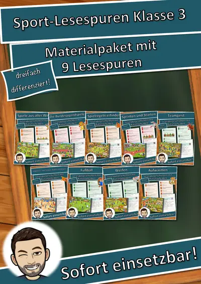
Materialpaket Lesespurgeschichten Sport Klasse 3: 9 Lesespuren mit Rätselaufgaben, dreifach differenziert

Materialpaket Lesespurgeschichten Sachunterricht Klasse 3 – Tiere, Pflanzen und Natur: 15 Lesespuren mit Rätselaufgaben, dreifach differenziert

Materialpaket Lesespurgeschichten Sachunterricht Klasse 3 – Alltag, Jahreslauf und Technik: 16 Lesespuren mit Rätselaufgaben, dreifach differenziert
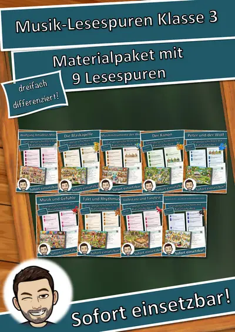
Materialpaket Lesespurgeschichten Musik Klasse 3: 9 Lesespuren mit Rätselaufgaben, dreifach differenziert
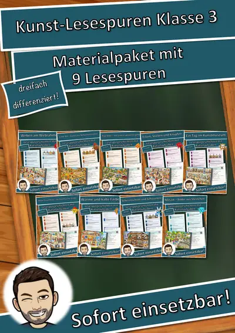
Materialpaket Lesespurgeschichten Kunst Klasse 3: 9 Lesespuren mit Rätselaufgaben, dreifach differenziert
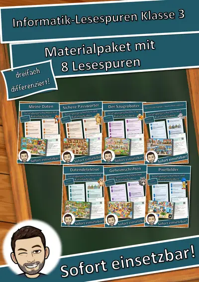
Materialpaket Lesespurgeschichten Informatik Klasse 3: 8 Lesespuren mit Rätselaufgaben, dreifach differenziert
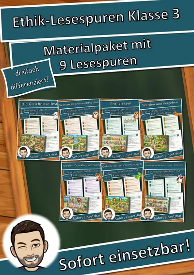
Materialpaket Lesespurgeschichten Ethik Klasse 3: 9 Lesespuren mit Rätselaufgaben, dreifach differenziert

Lesespaziergang Auf dem Weihnachtsmarkt – 6-fach differenziert mit Bildkarten, Sternchenaufgaben und Audio (Klasse 1–4)
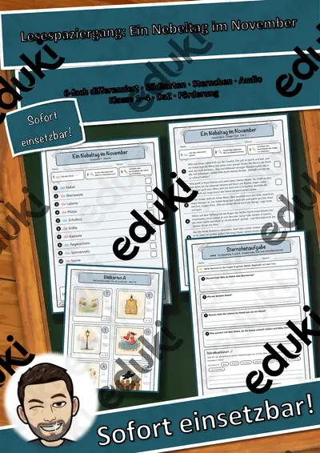
Lesespaziergang Ein Nebeltag im November – 6-fach differenziert mit Bildkarten, Sternchenaufgaben und Audio (Klasse 1–4)
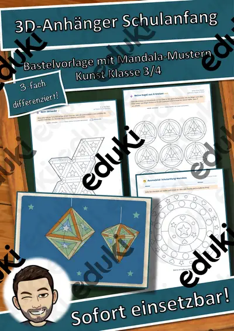
3D-Anhänger Schulanfang – Oktaeder, Diamant und Kugel zum Ausmalen und Basteln, 3-fach differenziert (Klasse 3/4)
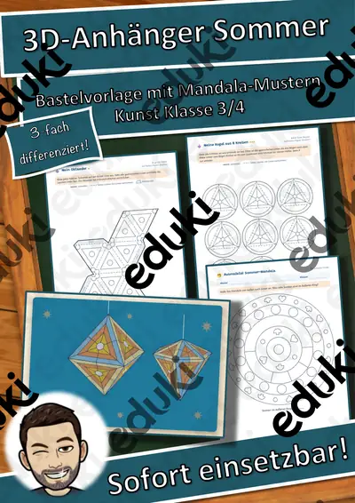
3D-Anhänger Sommer – Oktaeder, Diamant und Kugel zum Ausmalen und Basteln, 3-fach differenziert (Klasse 3/4)

3D-Anhänger Ostern – Oktaeder, Diamant und Kugel zum Ausmalen und Basteln, 3-fach differenziert (Klasse 3/4)
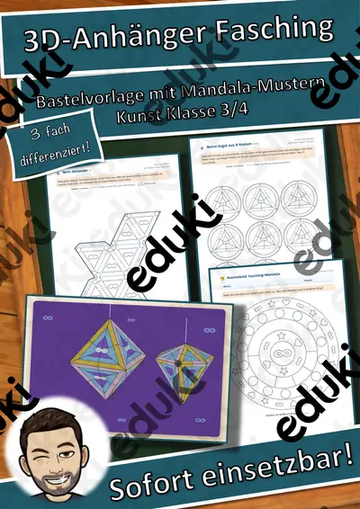
3D-Anhänger Fasching – Oktaeder, Diamant und Kugel zum Ausmalen und Basteln, 3-fach differenziert (Klasse 3/4)

3D-Anhänger Frühling – Oktaeder, Diamant und Kugel zum Ausmalen und Basteln, 3-fach differenziert (Klasse 3/4)
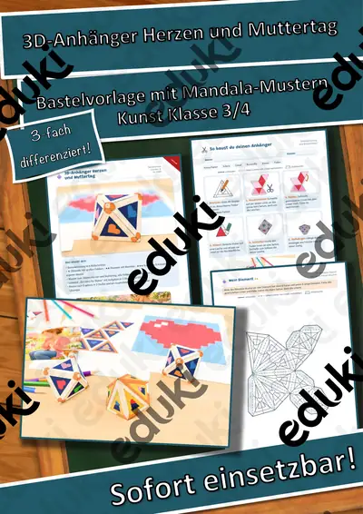
3D-Anhänger Herzen und Muttertag – Oktaeder, Diamant und Kugel zum Ausmalen und Basteln, 3-fach differenziert (Klasse 3/4)

Der Faschingsumzug – Rollenspiel Zeitspannen und Fahrplan, Anfang und Ende berechnen, 3-fach differenziert (Klasse 3)

Lesespaziergang DaZ: Wir backen – Wortschatz mit Rätseln, 3-fach differenziert (Klasse 1–4)

Lesespaziergang DaZ: Spielen im Schnee – Wortschatz mit Rätseln, 3-fach differenziert (Klasse 1–4)

Lesespaziergang DaZ: Gemüse – Wortschatz mit Rätseln, 3-fach differenziert (Klasse 1–4)

Lesespaziergang DaZ: Sankt Martin – Wortschatz mit Rätseln, 3-fach differenziert (Klasse 1–4)

3D-Anhänger Herbst – Oktaeder, Diamant und Kugel zum Ausmalen und Basteln, 3-fach differenziert (Klasse 3/4)

Materialpaket Advent und Winter für die 6. Klasse: 7 Lesespurgeschichten mit Rätselaufgaben (Weihnachtsbasar, Saturnalien, Lichterfeste & mehr)

Materialpaket Rechenwelten im Winter für die 3. Klasse: 8 Mathe-Rollenspiele, 3-fach differenziert (Weihnachtsbäckerei, Lichterpark, Eisbahn & mehr)

Materialpaket Winter und Advent für die 4. Klasse: 5 Lesespurgeschichten mit Rätselaufgaben (Weihnachtsmarkt, Fröbelsterne, Sternbilder & mehr)

Materialpaket Schnee, Eis und Wintersport für die 3. Klasse: 10 Lesespurgeschichten mit Rätselaufgaben (Rodelbahn, Eisstock, Schneelabor & mehr)
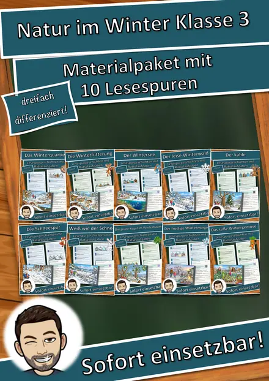
Materialpaket Natur im Winter für die 3. Klasse: 10 Lesespurgeschichten mit Rätselaufgaben (Wintertiere, Winterwald, Schneespuren & mehr)

Materialpaket Advent und Weihnachten für die 3. Klasse: 8 Lesespurgeschichten mit Rätselaufgaben (Barbarazweige, Lebkuchen, Santa Lucia, Sternsinger & mehr)

3D-Anhänger Winter – Oktaeder, Diamant und Kugel zum Ausmalen und Basteln, 3-fach differenziert (Klasse 3/4)

3D-Anhänger Advent – Oktaeder, Diamant und Kugel zum Ausmalen und Basteln, 3-fach differenziert (Klasse 3/4)

Die große Winter-Umfrage – Rollenspiel Daten, Tabellen und Säulendiagramme, 3-fach differenziert (Klasse 3)
Keine Materialien gefunden – versuch einen anderen Suchbegriff oder Filter.
Das Jahr der Fächervielfalt
In Klasse 3 kommt vieles zusammen: Englisch beginnt, Sachunterricht wird breiter, Rechnen verlangt Mal und Geteilt. Entsprechend vielfältig ist das Angebot auf dieser Seite. Fast alle Fächer der Grundschule sind vertreten, mit Schwerpunkt auf Deutsch und Sachunterricht.
Sachunterricht und Erdkunde
Für das Sachthema Natur und Winter gibt es „Materialpaket Natur im Winter für die 3. Klasse“ sowie ein weiteres Paket zu Schnee, Eis und Wintersport. Für die Länderkunde stehen „Materialpaket Steckbriefe Länder Europa“ und Einzelsteckbriefe wie „Steckbrief Europa (Ukraine)“ und „Steckbrief Europa (Türkei)“ bereit.
Englisch zum Sprechen
Die Englisch-Werkstatt bringt Sprechanlässe in die Klasse: „Englisch-Werkstatt: Idioms: Englische Redewendungen“, „Englisch-Werkstatt: I have, who has? Das Kartenspiel in der Schleife“ und „Englisch-Werkstatt: Tongue Teasers: Englische Zungenbrecher“. Die Karten brauchen wenig Vorbereitung und funktionieren auch ohne Lehrbuch.
Rechnen, Sport und Werte
Mathematik setzt auf „Der Faschingsumzug“, „Die große Winter-Umfrage“ und das Winterpaket der Rechenwelten. Sport bietet „Jonglieren“, „Werfen“, „Spielregeln erfinden“ und „Die Bundesjugendspiele“. Ethik greift „Streit schlichten“, „Barbarazweige“ und „Die Sternsinger“ auf, Informatik „Der Saugroboter“ und „Datendetektive“. Kunst liefert die 3D-Anhänger zu Schulanfang, Ostern und Fasching.
Auswahl und Einsatz
Bei so vielem lohnt der Blick über den Fachfilter. Wer für die Woche plant, kombiniert zum Beispiel eine Lesespur aus dem Sachunterricht mit einer Stunde Englisch-Werkstatt und einem Bewegungsangebot. Alle Titel sind mit Lösung versehen und erklären ihre Aufgabe selbst, sodass sie auch in Vertretungsstunden funktionieren. Was hier nicht sichtbar ist, findest du über die Suche und die Fach-Klasse-Seiten.
Hinweis zur Stufenwahl
Manche Titel tragen eine andere Klassenangabe im Namen, etwa Pakete für die 6. Klasse. Sie sind dem Katalog nach auch hier einsetzbar, und es lohnt sich, die Beschreibung zu lesen, ob der Anspruch passt.
Häufige Fragen
Warum gibt es in Klasse 3 so viel Material?
Weil in diesem Jahrgang viele Themen zusammenlaufen und Lehrkräfte ein breites Angebot nutzen.
Eignet sich die Englisch-Werkstatt für Anfänger?
Ja, die Spiele kommen ohne Vorkenntnisse aus und sind für das dritte und vierte Schuljahr gedacht.
Wie finde ich Material für ein einzelnes Fach?
Nutze die Fächerkacheln oder die Fach-Klasse-Seiten, etwa Mathematik Klasse 3.
Gibt es Material für Differenzierung?
Ja, viele Titel liegen in mehreren Niveaustufen vor.